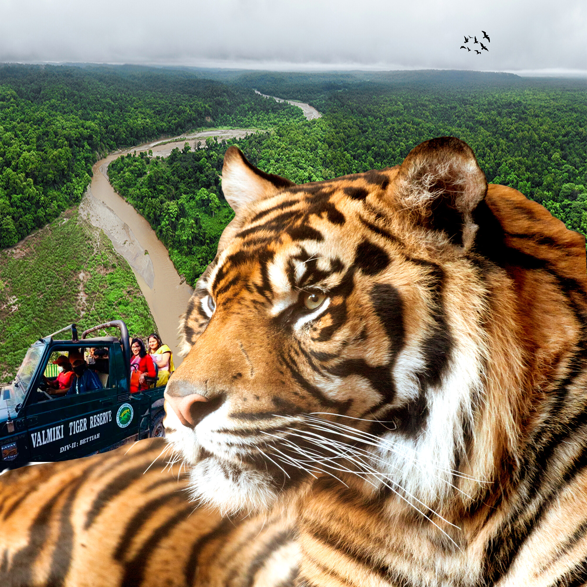
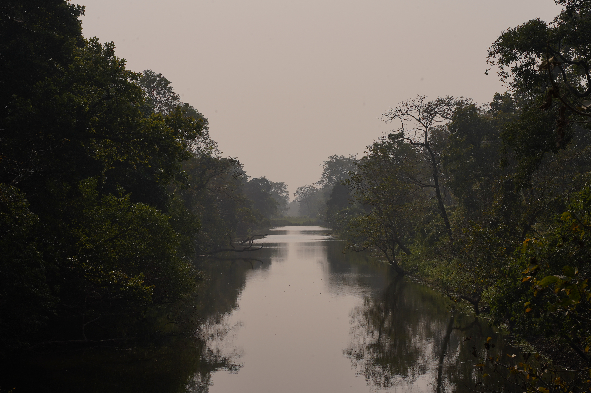

About Valmiki Tiger Reserve
Valmiki Tiger Reserve in West Champaran is the only tiger reserve in Bihar. Located in the Gangetic plains, this wildlife sanctuary offers visitors a chance to experience the thrill of nature and witness majestic tigers in their natural habitat.
The reserve is named after the ancient Valmiki Ashram and covers an area of 899 square kilometers. It is home to diverse flora and fauna, including the Royal Bengal Tiger, leopard, sloth bear, and various species of deer and birds.
Wildlife and Biodiversity
The reserve is a biodiversity hotspot with over 300 species of birds, 40 species of mammals, and numerous reptiles and amphibians. The dense forests and grasslands provide the perfect habitat for these species. Visitors can spot tigers, leopards, Indian bison, sambar deer, and chital deer during safaris.
Landscape and Geography
The reserve features diverse landscapes including dense forests, grasslands, and riverine ecosystems. The Gandak River flows through the reserve, adding to its scenic beauty. The terrain varies from flat plains to hilly areas, offering varied habitats for wildlife.




Visitor Information
The reserve offers jeep safaris and nature walks for visitors. The best time to visit is from October to June when the weather is pleasant and wildlife sightings are more frequent. Permits are required for entry and can be obtained at the forest office.
← Back to Destinations